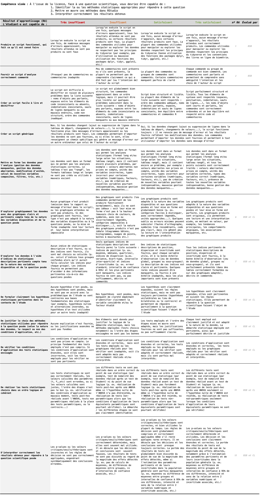

Introduction
Objectifs
Ce livre contient l’ensemble du matériel (contenus, exemples, exercices…) nécessaire à la réalisation des travaux pratiques de Biométrie de l’EC ‘Outils pour l’étude et la compréhension du vivant 5’ du semestre 6 de la licence Sciences de la Vie de La Rochelle Université.
À la fin du semestre, vous devriez être capables de faire les choses suivantes dans le logiciel RStudio :
- Explorer des jeux de données en produisant des résumés statistiques de variables de différentes nature (numériques continues ou catégorielles) et en produisant des graphiques appropriés
- Calculer des statistiques descriptives (moyennes, médianes, quartiles, écart-types, variances, erreurs standard, intervalles de confiance, etc.) pour plusieurs sous-groupes de vos jeux de données, et les représenter sur des graphiques adaptés
- Choisir et formuler des hypothèses adaptées à la question scientifique posée (hypothèses bilatérales ou unilatérales)
- Choisir les tests statistiques permettant de répondre à une question scientifique précise selon la nature de la question posée et la nature des variables à disposition
- Réaliser les tests usuels de comparaison de moyennes (\(t\) de Student à 1 ou 2 échantillons, appariés ou indépendants, ANOVAs etc.) et d’association entre 2 variables numériques (régression linéaire)
- Vérifier les conditions d’application de ces tests, et le cas échéant, réaliser des tests non paramétriques équivalents
- Interpréter correctement les résultats des tests pour répondre aux questions scientifiques posées
Pré-requis
Pour atteindre les objectifs fixés ici, et compte tenu du volume horaire restreint qui est consacré aux TP et TEA de Biométrie au S6, vous devez impérativement posséder un certain nombre de pré-requis. En particulier, vous devriez avoir à ce stade une bonne connaissance de l’interface des logiciels R et RStudio, et vous devriez être capables :
- de créer un
Rprojectet un script d’analyse dansRStudio(semestre 3) - d’importer des jeux de données issus de tableurs dans
RStudio(semestre 3) - d’effectuer des manipulations de données simples : sélectionner des variables, trier des colonnes, filtrer des lignes, créer de nouvelles variables, etc. (semestre 3)
- de produire des graphiques de qualité, adaptés à la fois aux variables dont vous disposez (selon leur nombre et leur nature) et aux questions auxquelles vous souhaitez répondre (semestre 3)
- de calculer des indices de statistiques descriptives de position (moyenne, médiane, quartiles), de dispersion (variance, écart-type, intervalle interquartile) et de d’incertitude (erreur standard et intervalle de confiance), pour un échantillon ou pour chaque modalité d’un facteur (semestre 4)
- d’expliquer les différences entre dispersion et incertitude (semestre 4)
- de représenter sur un graphique des données accompagnées des barres d’erreur pertinentes (semestre 4)
- de réaliser les tests usuels de comparaison de moyennes suivants : \(t\) de Student à 1 ou 2 échantillons, appariés ou indépendants (semestre 5)
- de vérifier les conditions d’application de ces tests, graphiquement et/ou avec des tests appropriés tels que les test de Shapiro-Wilk et de Levene (semestre 5)
- le cas échéant, de réaliser des tests non paramétriques équivalents : tests de Welch, de Wilcoxon… (semestre 5)
- d’interpréter correctement les résultats de ces tests pour répondre aux questions scientifiques posées (semestre 5)
- d’expliquer les notions de \(p-\)value, de seuil de signification, d’hypothèses nulles et alternatives, de décision, d’erreurs de type I et II, et de puissance statistique (semestre 5)
Mettez-vous à niveau de toute urgence en lisant attentivement :
- le livre en ligne de Biométrie du semestre 3. Vous y trouverez les éléments de prise en main du logiciel, les explications concernant les représentations graphiques et la manipulation de tableaux de données dans
RStudio. - le livre en ligne de Biométrie du semestre 4. Vous y trouverez notamment les explications concernant les statistiques descriptives, les notions de position, de dispersion et d’incertitude.
- les chapitres 1 à 3 du livre en ligne de Biométrie du semestre 5. Vous y trouverez les explications concernant les tests de comparaison de moyennes de Student et leurs équivalents non paramétriques, les tests de normalité et d’homoscédasticité, et les notions de \(p-\)value, de seuil de signification, d’hypothèses nulles et alternatives, de décision, d’erreurs de type I et II, et de puissance statistique.
Sans une bonne maîtrise de ces outils et notions, vous aurez du mal à suivre ce que nous allons aborder ce semestre. Vous avez donc beaucoup de travail devant vous…
Organisation
Volume de travail
Au total, 4 séances de TP d’1h30 suivies de 4 séances de TEA d’1h30 sont prévues entre le 6 février et le 15 mars 2024 :
- TP 1 : mardi 28 et vendredi 31 janvier
- TEA 1 : lundi 3 février
- TP 2 : lundi 3, mardi 4 et vendredi 7 mars
- TP 3 : mardi 11 et vendredi 14 mars
- TEA 2 : lundi 17 mars
- TP 4 : vendredi 21 et lundi 24 mars
- TEA 3 : samedi 22 mars
- TEA 4 : samedi 29 mars
Presque tous les TP ont lieu en salle MSI 217 ou en Sc3 et Sc4 du PCM. Tous les TEA sont en distantiel synchrone (voir détails plus bas).
Je vous indique tout ça pour vous permettre de vous déplacer aux séances qui vous conviennent le mieux. Si vous êtes disponibles pendant le TP d’un autre groupe mais que vous avez des questions à poser, n’hésitez pas à venir en salle : j’y serai systématiquement.
Au total, chaque groupe aura donc 4 séances de TP et 4 séances de TEA, soit un total de 12 heures prévues dans vos emplois du temps. C’est peu pour atteindre les objectifs fixés et il y aura donc évidemment du travail personnel à fournir en dehors de ces séances. J’estime que vous devrez fournir à peu près une douzaine d’heures de travail personnel en plus des séances prévues dans votre emploi du temps. Sachez toutefois que selon votre niveau d’aisance, et les acquis des semestres précédents, vous pourrez aller plus vite que prévu, ou au contraire (beaucoup !) plus lentement. Attention donc : pensez bien à prévoir du temps dans vos plannings car le travail personnel est essentiel pour atteindre les objectofs fixés. J’insiste sur l’importance de faire l’effort dès maintenant : vous aurez très probablement besoin des compétences développées dans cet enseignement durant votre stage de L3 et, très vraisemblablement, lors de vos futurs masters également. C’est donc maintenant qu’il faut acquérir des automatismes, cela vous fera gagner énormément de temps ensuite.
Modalités d’enseignement
Pour suivre cet enseignement vous pourrez utiliser les ordinateurs de l’université, mais je ne peux que vous encourager à utiliser vos propres ordinateurs, sous Windows, Linux ou MacOS. Lors de vos futurs stages et pour rédiger vos comptes-rendus de TP, vous utiliserez le plus souvent vos propres ordinateurs, autant prendre dès maintenant de bonnes habitudes en installant les logiciels dont vous aurez besoin tout au long de votre licence. Si vous n’avez pas suivi les enseignements de biométrie des semestres 3, 4 ou 5 et que les logiciels R et RStudio ne sont pas encore installés sur vos ordinateurs, suivez la procédure décrite ici. Si vous ne possédez pas d’ordinateur, manifestez vous rapidement auprès de moi car des solutions existent (prêt par l’université, travail sur tablette via RStudio/Posit cloud…).
L’essentiel du contenu de cet enseignement peut être abordé en autonomie, à distance, grâce à ce livre en ligne, aux ressources mises à disposition sur Moodle et à votre ordinateur personnel. Cela signifie que la présence physique lors de ces séances de TP n’est pas obligatoire.
Plus que des séances de TP classiques, considérez plutôt qu’il s’agit de permanences non-obligatoires : si vous pensez avoir besoin d’aide, si vous avez des points de blocage ou des questions sur le contenu de ce document ou sur les exercices demandés, alors venez poser vos questions lors des séances de TP (les vôtres ou celles de vos collègues). Vous ne serez d’ailleurs pas tenus de rester pendant 1h30 : si vous obtenez une réponse en 10 minutes et que vous préférez travailler ailleurs, vous serez libres de repartir !
De même, si vous n’avez pas de difficulté de compréhension et si les exercices de ce livre en ligne ne vous posent pas de problème, votre présence n’est pas requise. Mais si vous souhaitez malgré tout venir en salle de TP, pas de problème, vous y serez toujours les bienvenus. D’aileurs, faîtes attention : on a parfois l’impression d’avoir bien compris lorsque l’on lit des explications alors que ça n’est pas le cas. La seule façon d’en être sûr, c’est d’être capable d’expliquer (un concept, une notion, un raisonnement, une méthode…) à une autre personne. Si c’est clair pour vous, vous devriez être en mesure de l’expliquer facilement à une tierce personne, en utilisant un vocabulaire approprié, précis et concis. Donc si vous avez le moindre doute faites l’effort de passer en salle de TP, ne serait-ce que quelque minutes, afin de confirmer auprès de moi que vous avez bien compris. Cela ne vous coûte pas grand chose : les créneaux de TP apparaissent de toutes façons dans vos emplois du temps.
Ce fonctionnement très souple a de nombreux avantages :
- vous vous organisez comme vous le souhaitez
- vous ne venez que lorsque vous en avez besoin
- celles et ceux qui se déplacent reçoivent une aide personnalisée
- vous travaillez sur vos ordinateurs
- les effectifs étant réduits, c’est aussi plus confortable pour moi !
Toutefois, pour que cette organisation fonctionne, cela demande de la rigueur de votre part, en particulier sur la régularité du travail que vous devez fournir. Si la présence en salle de TP n’est pas requise, le travail demandé est bel et bien obligatoire ! Si vous venez en salle de TP sans avoir travaillé en amont, vous risquez de perdre votre temps car vous passerez votre séance à lire et suivre ce livre en ligne, choses que vous pouvez très bien faire chez vous. De même, si vous attendez le mois de mars pour vous y mettre sérieusement, je ne pourrai pas grand chose pour vous. Je le répète, outre les heures de TP/TEA prévus dans vos emplois du temps, vous devez prévoir au moins 12 heures de travail personnel supplémentaire.
Pour finir sur cette question de l’organisation de ces TP et TEA, je vous livre un commentaire qui m’a été fait lors des semestres précédents lorsque je demandais à vos collègues et prédécesseurs s’ils appréciaient ou non ce fonctionnement. Plusieurs m’ont dit ceci : “nous aurions préféré des séances de présentiel classique car comme ça, on aurait pu vous poser nos questions directement”. J’avoue ne pas avoir su quoi répondre… Encore une fois, les créneaux sont prévus dans vos emplois du temps, je suis physiquement présent en salle de TP pour toutes les séances de tous les groupes. Donc si vous avez des questions à poser, et si c’est plus facile pour vous, venez comme à une séance de TP classique, rien ne vous en empêche !
Utilisation de Slack
Comme au semestre précédent, nous pourrons échanger sur l’application Slack. Si vous ne l’avez pas encore fait (vous êtes une trentaine dans ce cas !), créez-vous un compte en ligne et installez le logiciel sur votre ordinateur (il existe aussi des versions pour tablettes et smartphones). Lorsque vous aurez installé le logiciel, cliquez sur ce lien pour vous connecter à notre espace de travail commun intitulé L3 SV 23-24 / EC outils (ce lien expire régulièrement : faites moi signe s’il n’est plus valide). C’est le même espace de travail qu’au semestre précédent et si vous vous y êtes déjà connecté cet automne, vous n’avez plus qu’à relancer le logiciel.
Vous verrez que 3 “canaux” y sont disponibles :
- #général : c’est là que les questions liées à l’organisation générale du cours, des TP et TEA, des évaluations, etc. doivent être posées. Si vous ne savez pas si une séance de permanence a lieu, posez la question ici.
- #questions-rstudio : c’est ici que toutes les questions pratiques liées à l’utilisation de
RetRStudiodevront êtres posées. Problèmes de syntaxe, problèmes liés à l’interface, à l’installation des packages ou à l’utilisation des fonctions, à la création des graphiques, à la manipulation des tableaux… Tout ce qui concerne directement les logiciels sera traité ici. Vous êtes libres de poser des questions, de poster des captures d’écran, des morceaux de code, des messages d’erreur. Et vous êtes bien entendus vivement encouragés à vous entraider et à répondre aux questions de vos collègues. Je n’interviendrai ici que pour répondre aux questions laissées sans réponse ou si les réponses apportées sont inexactes. Le fonctionnement est celui d’un forum de discussion instantané. Vous en tirerez le plus grand bénéfice en participant et en n’ayant pas peur de poser des questions, même si elles vous paraissent idiotes. Rappelez-vous toujours que si vous vous posez une question, d’autres se la posent aussi probablement. - #questions-stats : C’est ici que vous pourrez poser vos questions liées aux méthodes statistiques. Tout ce qui ne concerne pas directement l’utilisation du logiciel (comme par exemple le choix d’un test ou des hypothèses nulles et alternatives, la démarche d’analyse, la signification de tel paramètre ou estimateur, le principe de telle ou telle méthode…) peut être discuté ici. Comme pour le canal #questions-rstudio, vous êtes encouragés à vous entraider et à répondre aux questions de vos collègues.
Ainsi, quand vous travaillerez à vos TP ou TEA, que vous soyez installés chez vous ou en salle de TP, prenez l’habitude de garder Slack ouvert sur votre ordinateur. Même si vous n’avez pas de question à poser, votre participation active pour répondre à vos collègues est souhaitable et souhaitée. Je vous incite donc fortement à vous entraider : c’est très formateur pour celui ou celle qui explique, et celui ou celle qui rencontre une difficulté a plus de chances de comprendre si c’est quelqu’un d’autre qui lui explique, plutôt que la personne qui a rédigé les instructions mal comprises déjà lues dans cet ouvrage…
Ce document est fait pour vous permettre d’avancer en autonomie et vous ne devriez normalement pas avoir beaucoup besoin de moi si votre lecture est attentive. L’expérience montre en effet que la plupart du temps, il suffit de lire correctement les paragraphes précédents et/ou suivants pour obtenir la réponse à ses questions. J’essaie néanmoins de rester disponible sur Slack pendant les séances de TP et de TEA de tous les groupes. Cela veut donc dire que même si votre groupe n’est pas en TP, vos questions ont des chances d’être lues et de recevoir des réponses dès que d’autres groupes sont en TP ou TEA. Vous êtes d’ailleurs encouragés à échanger sur Slack aussi pendant vos phases de travail personnel.
Progression conseillée
Si vous avez suivi les livres en ligne des semestres précédents, vous savez que pour apprendre à utiliser RStudio, il faut faire les choses soi-même, ne pas avoir peur des messages d’erreurs (il faut d’ailleurs apprendre à les déchiffrer pour comprendre d’où viennent les problèmes), essayer maintes fois, se tromper beaucoup, recommencer, et surtout, ne pas se décourager. J’utilise ce logiciel presque quotidiennement depuis plus de 15 ans et à chaque session de travail, je rencontre des messages d’erreur. Avec suffisamment d’habitude, on apprend à les déchiffrer, et on corrige les problèmes en quelques secondes. Ce livre est conçu pour vous faciliter la tâche, mais ne vous y trompez pas, vous rencontrerez des difficultés, et c’est normal. C’est le prix à payer pour profiter de la puissance du meilleur logiciel permettant d’analyser des données, de produire des graphiques de qualité et de réaliser toutes les statistiques dont vous aurez besoin d’ici la fin de vos études et au-delà.
Pour que cet apprentissage soit le moins problématique possible, il convient de prendre les choses dans l’ordre. C’est la raison pour laquelle les chapitres de ce livre doivent être lus dans l’ordre, et les exercices d’application faits au fur et à mesure de la lecture.
Idéalement, voilà les étapes que vous devriez avoir franchi chaque semaine :
La première séance sera consacrée à l’analyse de variance (1 Comparaison de moyennes : plus de 2 groupes). Il s’agit du premier exemple de modèle linéaire que nous examinerons ensemble. Ce test est assez différents des autres (ceux que nous avons décrits au semestre 5) dans sa philosophie. Vous aurez donc besoin d’un peu de temps pour vous approprier la façon de faire, en particulier la logique de la vérification des conditions d’application, et il n’est pas exclus que vous ayez beosin de “déborder” un peu sur la deuxième séance pour terminer ce chapitre. il y a toutefois plusieurs semaines entre la première et la deuxième séance. Vous devriez donc avoir le temps de venir à bout de ce chapitre avant la fin des vacances de février.
La deuxième séance sera consacrée à la corrélation (2 Corrélation) qui permet de mesurer l’intensité de la relation qui existe entre deux variables numériques continues. Cette notion en apparence assez simple cache en réalité de nombreuses subtilités (corrélation vs. causalité, variables confondantes, tests paramétriques ou on paramétriques, etc.). Il sera en particulier important d’être capable de sitinguer clairement les objectifs, les ressemblances et les différences entre corrélation d’une part, et régression linéaire d’autre part. Les évaluations passées ont montré que distinguer ces 2 notions était difficile pour nombre d’entre vous.
La troisième séance sera consacrée à la régression linéaire (3 Régression linéaire). Outre ses ressemblances avec la corrélation, cette méthode est également le second type de modèle linéaire au programme cette année, après l’ANOVA. Puisque l’ANOVA et la régression linéaires sont deux méthodes de la famille des modèles linéaires, beaucoup de choses seront communes à ces méthodes (étapes de l’analyse, fonstion à utiliser dans
RStudio, façon de vérifier les conditions d’application…).Mais attention, ce chapitre reste conséquent, et il faudra là encore que vous soyez capables de bien distinguer corrélation et régression linéaire, mais aussi ANOVA et régression linéaire.Enfin, la dernière séance sera consacrée à terminer et/ou corriger les exercices qui vous poseraient encore problème sur ces 3 chapitres. Vous pourrez également travailler sur le rapport de stratégie d’échantillonnage pour lequel vous aurez des analyses statistiques à réaliser. Plus de détails sur ce rapport dans la partie “Évaluation(s)” ci-dessous.
Au final :
- le chapitre 1 doit être traité avant le début de la deuxième séance de TP
- le chapitres 2 doit être traité avant le début de la troisième séance de TP
- le chapitre 3 doit être traité au mieux avant la fin de la troisème séance, et au pire avant la fin de la quatrième séance de TP
Vous comprenez j’espère que dans chaque chapitre, une ou des méthodes vous sont présentées en détail. À la fin de chaque chapitre, un ou des exercices d’application vous sont proposés. À l’issue des ces TP (S5 et S6), vous disposerez, dans votre arsenal de biostatisticien, de près d’une quinzaine de tests statistiques différents. Le plus difficile sera d’être en mesure d’identifier lequel choisir face à un jeu de données inconnu, et face à des questions nouvelles. Votre travail consiste donc aussi à vous assurer que vous comprenez bien dans quelles situations utiliser chaque test, et à savoir comment vérifier que vous avez le droit d’utiliser tel ou tel test pour répondre aux questions posées. Cela fera aussi partie de l’évaluation finale
Évaluation(s)
L’évaluation de cette partie “Biométrie” de l’EC “Outils pour l’étude et la compréhension du vivant” a pour objectif de vérifier que les objectifs fixés en début de L2 sont bien atteints :
Face à une question scientifique, vous devriez être capable de :
- Identifier la ou les méthodes statistiques appropriées pour répondre à cette question
- Mettre en œuvre ces méthodes dans
RStudio - Interpréter correctement les résultats obtenus
Le premier objectif suppose que vous connaissiez votre cours de biométrie : quels indices de statistiques descriptives et quelles représentations graphiques sont pertinentes pour se faire une idée des données dont vous disposez, de leurs distributions et tendances générales ? Comment mesurer la position, la dispersion et l’incertitude de variables numériques et qualitatives ? Quels tests statistiques réaliser dans quelles situations ? Comment en vérifier les conditions d’applications et quelles en sont les alternatives non paramétriques ? Comment formuler les hypothèses nulles et alternatives des tests utilisés, et que sont les notions de tests bilatéraux ou unilatéraux, de puissance, de seuil de significativité et d’erreurs ?
Le second objectif suppose que vous ayez une maîtrise suffisante de RStudio pour y importer les données nécessaires, pour les mettre dans une format qui rendra facile les calculs d’indices de statistiques descriptives, la production de graphiques et la réalisation des tests statistiques appropriés. Cela signifie aussi que vous devez savoir comment travailler efficacement dans RStudio : comment créer un Rproject, comment organiser votre script, comment commenter votre code et consulter l’aide des fonctions dont vous avez besoin. Vous devez enfin être capable de calculer les indices utiles, de produire les graphiques pertinents et de réaliser les tests statistiques dont vous avez besoin.
Enfin, le troisième objectif suppose que vous soyez capable de dire si les conditions d’application des tests sont vérifiées, si les hypothèses nulles sont rejetées ou non, si les résultats obtenus sont significatifs ou non au seuil fixé, et s’ils le sont, vous devez être capable de fournir une estimation de l’ampleur des différences constatées (la magnitude de l’effet) et de fournir son incertitude. Vous devez enfin être capable de répondre clairement à la question scientifique posée en appuyant vos affirmations sur les résultats obtenus, en les présentant de façon claire, synthétique et pertinente.
L’évaluation de l’ensemble de ces objectifs sera faite conjointement par Pierrick Bocher, Christel Lefrançois et moi, dans le cadre des enseignements de stratégie d’échantillonnage et de biométrie. Dans le cadre de votre rapport de stratégie d’échantillonnage au format IMRED, vous aurez à répondre à un quelques questions scientifiques précises qui vous demanderont de réaliser un certains nombre de traitements de données et d’analyses statistiques. En plus de la partie “matériels et méthodes” de votre rapport IMRED, où vous devrez entre autres décrire succinctement les outils et analyses statistiques utilisés pour répondre aux questions posées, vous devrez rendre 2 choses :
- Une annexe statistique dans laquelle vous décrirez un peu plus en détail les analyses statistiques réalisées (indices calculés et incertitudes associées, hypothèses, tests réalisés, vérification des conditions d’application, etc.). Cetta partie sera corrigée par Christel Lefrançois, qui évaluera aussi vos “matériels et métodes” et “résultats”. Elle vous donnera plus de détails de vive voix.
- Un script
Rabondamment commenté qui contiendra l’ensemble de vos analyses et que je devrai pouvoir exécuter sans message d’erreur pour reproduire votre cheminement. C’est moi qui corrigerai ce script, et les critères de la grille d’évaluation ci-dessous seront appliqués. Je vous encourage donc à lire et relire très attentivement cette grille afin de vous approprier les critères d’évaluation. Les séances de TP et de TEA qui viennent doivent vous permettre de vous entraîner à produire des scripts de qualité.

Christel Lefrançois, Pierrick Bocher et moi reviendrons très rapidement vers vous avec des consignes précises pour chacune des parties que nous évaluerons. Nous vous fournirons notamment la liste des questions scientifiques auxquelles vous aurez à répondre grâce aux données que vous avez collectées en baie d’Aytré, ainsi que les consignes précises concernant les modalités de rendu (formats de fichiers, date limite, etc.).
Licence
Ce livre est ligne est sous licence Creative Commons (CC BY-NC-ND 4.0)

Vous êtes autorisé à partager, copier, distribuer et communiquer ce matériel par tous moyens et sous tous formats, tant que les conditions suivantes sont respectées :
- Attribution : vous devez créditer ce travail (donc citer son auteur), fournir un lien vers ce livre en ligne, intégrer un lien vers la licence Creative Commons et indiquer si des modifications du contenu original ont été effectuées. Vous devez indiquer ces informations par tous les moyens raisonnables, sans toutefois suggérer que l’auteur vous soutient ou soutient la façon dont vous avez utilisé son travail.
- Pas d’Utilisation Commerciale : vous n’êtes pas autorisé à faire un usage commercial de cet ouvrage, ni de tout ou partie du matériel le composant. Cela comprend évidemment la diffusion sur des plateformes de partage telles que studocu.com qui tirent profit d’œuvres dont elles ne sont pas propriétaires, souvent à l’insu des auteurs.
- Pas de modifications : dans le cas où vous effectuez un remix, que vous transformez, ou créez à partir du matériel composant l’ouvrage original, vous n’êtes pas autorisé à distribuer ou mettre à disposition l’ouvrage modifié.
- Pas de restrictions complémentaires : vous n’êtes pas autorisé à appliquer des conditions légales ou des mesures techniques qui restreindraient légalement autrui à utiliser cet ouvrage dans les conditions décrites par la licence.